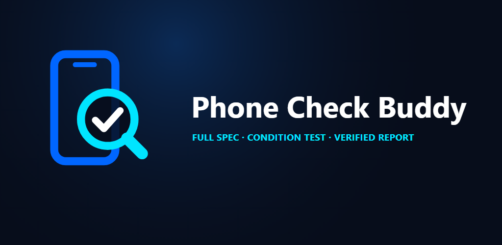
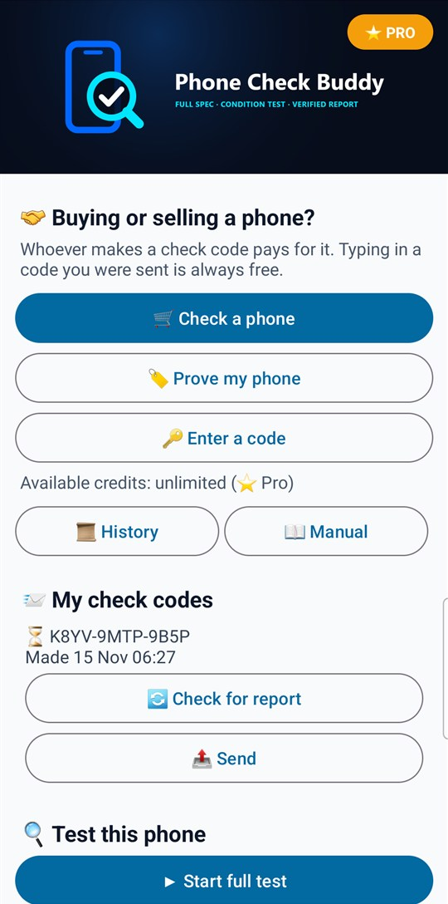
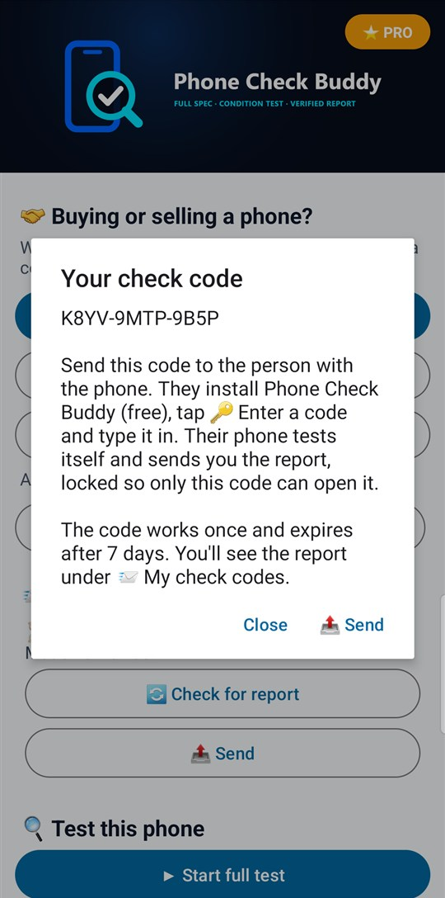
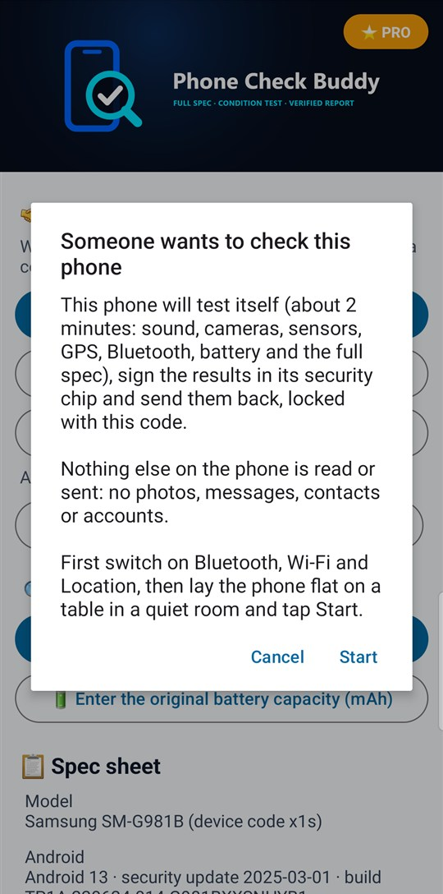
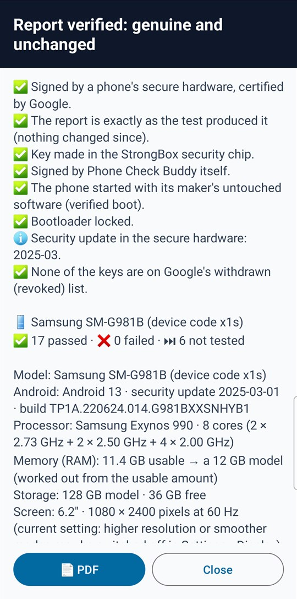
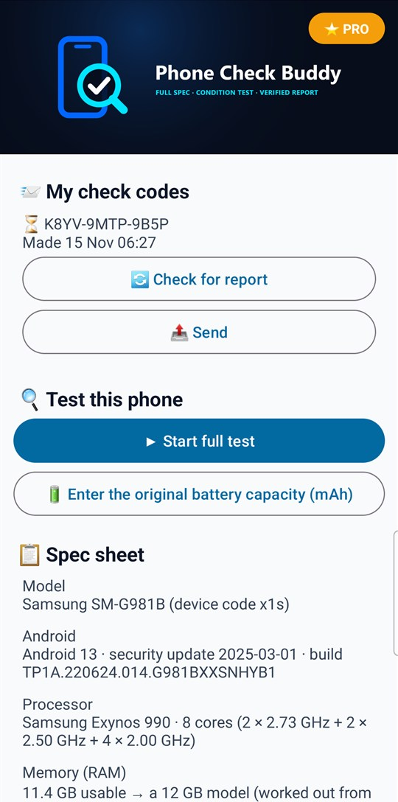
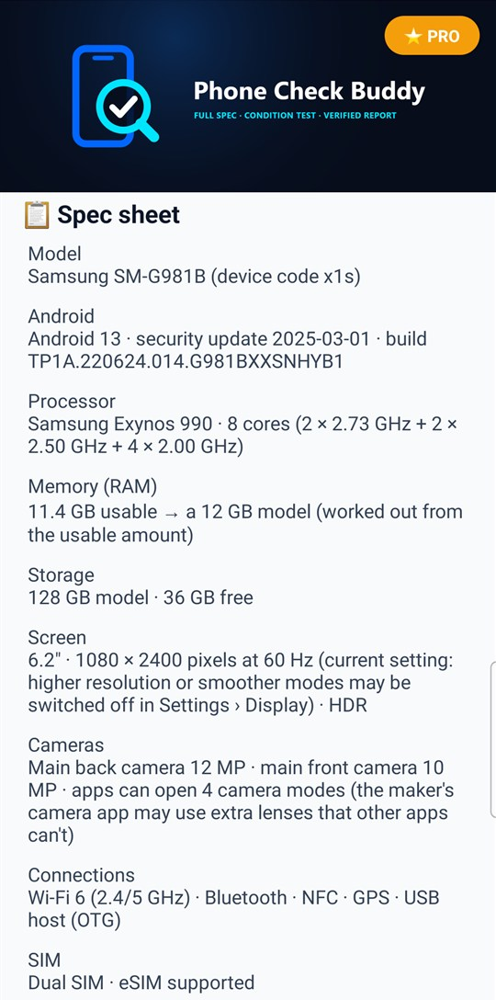

How Phone Check Buddy works, step by step
Phone Check Buddy helps people buy and sell used phones with confidence.
1. Tap 🛒 Check a phone. You get a check code such as 7K4M-29QX-D3HZ.
2. Tap 📤 Send to share it by text, WhatsApp, email or any marketplace message.
3. The person with the phone installs Phone Check Buddy (free), taps 🔑 Enter a code and types your code. Their phone tests itself in about 2 minutes and sends the report.
4. The report appears under 📨 My check codes on your phone. Tap 📋 Open report.
Reports arrive when you open the app, or tap 🔄 Check for report.
1. Tap 🏷️ Prove my phone.
2. Switch on Bluetooth, Wi-Fi and Location, lay the phone flat on a table in a quiet room and tap Start. The test runs by itself.
3. You get a code. Tap 📤 Send, or put it in your listing.
4. Whoever has the code types it into Phone Check Buddy (free) and sees the verified report.
Typing in a code you were sent is always free.
Codes have 12 letters and numbers. The letters O, I and L and the numbers 0 and 1 are never used, and a mistyped code is caught straight away.
When a phone answers a check code, these steps run by themselves:
If Android asks for a permission (microphone, camera, location, nearby devices), tap Allow, or that step is shown as not tested.
The hands-on tests (flashlight, proximity sensor, touch screen, screen colours, buttons and charging) need a person, so a report made by answering or proving with a code lists them as not tested.
✅ passed · ❌ failed · ℹ️ information · ⏭ not tested.
Each result says how it was obtained: measured (by the phone's sensors and the app's tests), read from the phone, or confirmed by the person testing (things only a person can see, such as screen colours, in the full test).
At the top, the verification says:
If the report was changed, wasn't signed by a real phone's security chip, or its keys were withdrawn, the report isn't shown at all, because its contents can't be trusted. A phone with modified software or an unlocked bootloader still gets its report, with a ⚠️ or ❌ warning at the top.
Tap 📄 PDF to save or share the report as a PDF.
▶ Start full test runs every step on this phone, including the hands-on ones: flashlight, proximity sensor, touch screen, screen colours, buttons and charging. The results appear under 🔍 Condition test.
🔋 Original battery capacity: Android doesn't tell apps the battery's original size. Enter it from the box or the maker's specification (for example 4000 mAh) and the battery health is estimated from it.
Whoever makes a check code pays for it. Typing in a code you were sent is always free.
A credit is only used up once a check code has been made with it. You can have one unused credit at a time. Pro, or a credit you paid for but haven't used, comes back by itself when you open the app on this or another phone with the same Google account.
📜 History lists everything done on this phone, newest first: credits and Pro bought (with your available credits, and the codes made with each listed underneath: tap a code to send it again), reports sent and received, and codes that expired. Tap 📋 Open report to see a report again. 🗑 deletes a line from History; any code in it still works. History is kept on this phone only. 📨 My check codes on the main screen shows your newest code that hasn't expired; earlier ones are in 📜 History.
Phone Check Buddy v1.1 (Build 2)
Publisher: AppStack Studio
Support and privacy: daverimmeruk.github.io/appstack-studio/phone-check-buddy/
Buying a used phone means trusting a stranger's description. Phone Check Buddy lets the phone describe itself: its full spec and a measured condition test, signed in its own security chip so the report can't be faked or edited.
| Feature | Typical phone-test apps | Phone Check Buddy |
|---|---|---|
| Can the results be trusted? | Screenshots, easy to edit | Signed in the phone's security chip and checked against Google's certificates: a changed report is refused |
| Checking a phone from a distance | Usually not offered | Send a check code: the other phone tests itself and sends you the report |
| Modified or rooted phones | Rarely shown | Verified boot and bootloader state from the security chip |
| Speaker and microphones | "Did you hear it?" | A tone measured by each microphone, in dB above room noise |
| Exact spec | Often the current setting only | Chip name, core speeds, RAM and storage size of the model, screen, cameras, Wi-Fi standard, SIM |
| Report to keep | Often not offered | 📄 PDF condition report |
| Ads and tracking | Common | None |

1. Main screen
Check a phone, prove your own, or enter a code.

2. Your check code
Send it to the person with the phone: their phone tests itself and sends you the report.

3. Answering a code
Type the code, tap Start: the test runs by itself.

4. Verified report
Signed in the phone's security chip, checked against Google's certificates.

5. My check codes
Reports arrive here when the other phone has answered.

6. Spec sheet
The phone's exact spec, read from the phone itself.
Screenshots taken on a Samsung Galaxy S20.